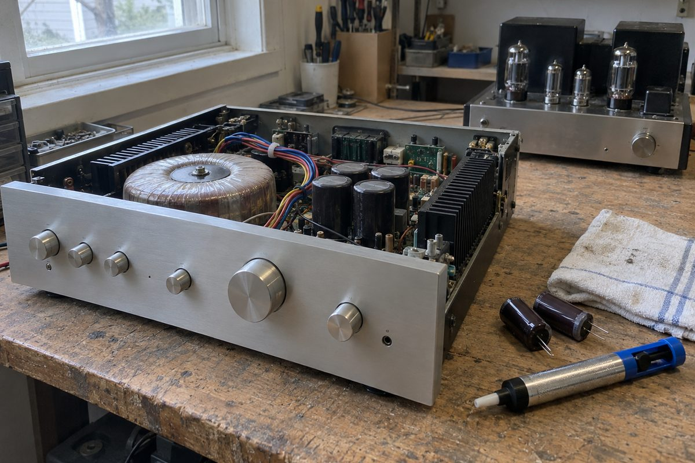

01
Усилители и ресиверы
Пропал канал, фон, уходит в защиту: сравниваем каналы по контрольным точкам и находим, где теряется сигнал. Чиним по компонентам: выходной каскад, реле, питание, регуляторы.
Не включается или гаснет через минуту: питание и защита. Нет звука на части каналов: выходные каскады. Проверяем на реальной акустике.
Рэковые усилители на 100 В, микшеры и блоки оповещения. Восстанавливаем и проверяем под линией.